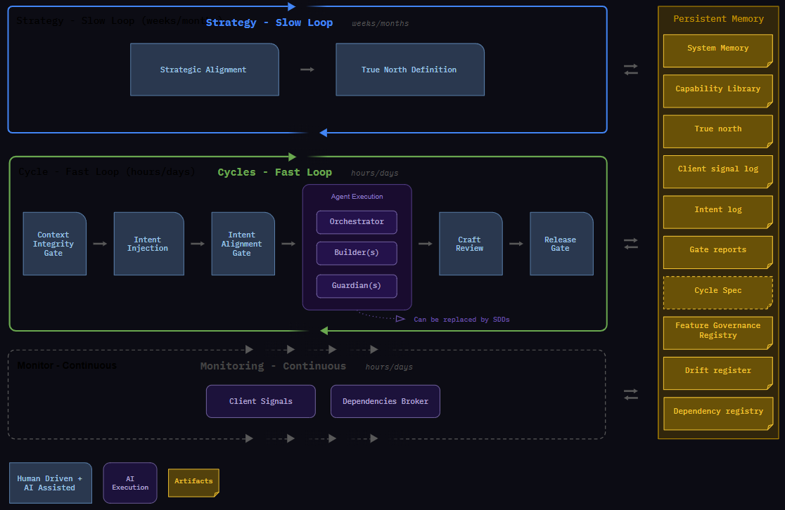

IDF · Alpha · 2026
Intent
Driven
Flow
Traditional agile was built for human bandwidth. This isn't.
The Driver and the Pilot
A seasoned Driver and a young Pilot stood before a gleaming, chrome vessel at the edge of the atmosphere.
The Driver held a leather-wrapped steering wheel, a heavy brake pedal, and a map of the local highways. "I've spent twenty years mastering the road," the Driver said. "I know exactly when to hit the gas to overcome friction, when to turn the wheel to stay in the lane, and when to slam the brakes to avoid a crash. I am ready to lead this mission."
The Pilot looked up at the black expanse of the stars and shook his head. "Friend," he said, "where we are going, there are no roads. There is no air. There is no friction."
01 — Getting started
Traditional agile was built for human bandwidth. This isn't.
IDF is a delivery framework for teams using AI to build software. Agents handle execution — breaking down intent, writing code, running tests. Humans set direction, maintain the system's memory, and approve what ships.
Human judgment
over
automated execution
Usability and clean context
over
comprehensive documentation
Respond to reality
over
following a plan
IF YOU ARE COMING FROM SCRUM
IDF does not estimate. This is deliberate.
Story points and velocity exist because human teams have limited bandwidth — estimation is how they manage it. When agents handle execution, that constraint disappears. Estimating before a cycle produces false confidence: it is almost always wrong, and it only matters if you planned around it.
IDF's answer is simpler: run the cycle, read the gate report, adjust. The gate report tells you how complex it was. Cycles end when the outcome is reached — not when a timer runs out.
What estimation actually provides is a feeling of control — a rhythm stakeholders can point to. IDF replaces that rhythm with evidence. Before anything reaches clients, a human approves it against a gate report: what was built, what the signals show, pass or fail. That is not a guess about what will happen. It is a record of what did happen. Predictability in IDF is not a forecast. It is a guarantee — nothing ships without a human decision.
READING ORDER — NEW TO IDF
Sections 01–04 are your foundation: getting started, rules, roles, and one complete cycle.
Sections 05–10 are your reference layer — return when you need them.
02 — Operating principles
The rules that govern everything
Six rules. Not subject to team preference — they are what makes IDF work. Read them once. Return when something feels wrong.
R1Express outcomes, not instructions. The right input to the system is a clear statement of desired client outcome. Task lists, acceptance criteria, and implementation instructions are outputs of decomposition — not inputs to it. State what needs to be true for the client. Let the system determine how.
R2Ambiguity stops execution. It never shapes it. When intent is unclear, the correct response is to surface the ambiguity and wait for clarification. A system that infers its way through unclear intent will be confidently wrong. Execution pauses. Humans resolve. Execution resumes.
R3Every client-observable change ships behind a flag. Deployment and release are separate events. A change is deployed when it exists in production behind a Pending-OFF flag. It is released when a human flips it to Live-ON. Changes that do not affect client-observable behaviour — content fixes, config corrections, dependency bumps — are governed by version control, not flags. Dead flags left in the codebase expand the active context surface and increase drift probability — they must be removed.
R4Context is data plus intent — and it decays. An agent's understanding of the system is built from data: written records, logs, code, dashboards, signals. Its direction comes from intent: the outcome humans committed to. Neither survives without maintenance. Data that isn't reviewed drifts from reality. Intent that isn't recorded gets reinvented. A system that treats memory as a substitute for current, clean data is running on context that corrupts with every cycle.
R5Measure what reaches the client, not what moves inside the system. Cycle throughput and escape rate tell you if the system is healthy. Story points, commit counts, and hours worked do not. Drift from intent is normal — the failure is not detecting it before it reaches the client.
A06Human gates validate alignment, not output. An automated check validates that code runs. A human gate validates that what runs is what was intended. These are different questions and require different readers. No automated gate replaces a human alignment gate. No human alignment gate replaces an automated check. Each serves a function the other cannot perform. Gate 1 validates that the intent and cycle scope are worth executing. Gate 2 validates that an iteration's output is ready to advance to release authorization. Gate 3 validates that the PO authorizes the client-visible change.
03 — Roles
Who does what — and why
Those rules are executed by people and agents with defined, non-overlapping authority. Roles are defined by the decisions they own, not by the tasks they perform or the tools they use. No role holds decision authority that belongs to another layer — crossing that boundary signals a broken process, not a capable person. The table below shows how existing roles map into IDF.
If you are currently...
In IDF you become...
Developer / Engineer
Craft Engineer — encodes how agents should build; catches what automated checks cannot judge
QA Engineer / Tester
Quality Advocate — sets quality gate criteria and validates as a real user before any flag turns ON
Product Manager / PO
Product Owner — translates client signals into cycle intent; holds release gate authority
Tech Lead / Architect
Architect — defines the constraints agents operate within; decisions live in capability files, not tickets
Manager / Director
Stakeholder — holds the portfolio horizon; sets the direction within which product decisions are made
Select a role to explore its responsibilities
Stakeholders
Portfolio horizon
human
Product Owner
Intent & release gate authority
human
Craft Engineer
Code craft governor
human
Quality Advocate
Gate criteria & validation
human
Architects / TLs
Technical guardrails
human
Intent flows down · Approval flows up
Orchestrator
Decompose & route
agent
Builder(s)
Execute tasks
agent
Guardian
Gate & quality check
agent
Dep. Broker
Cross-team signals
agent
Client
Ultimate measure
human
04 — The delivery cycle
Plan to monitor — one intent, one or more cycles
Those roles interact through a single repeatable cycle. Each cycle is a complete, self-contained unit of delivery. A cycle begins with intent and ends with a monitored, flag-controlled release. Cycles are not time-boxed — they are completion-triggered. A simple feature may complete in 2 hours. A complex one may span multiple sub-cycles with intermediate gates.
Intent describes the outcome and the measurement signal — it is time-unbounded and PO-owned. One intent can span multiple cycles. A cycle is a coherent delivery unit with one feature flag; it closes at Gate 3. Inside each cycle, one or more iterations handle the actual implementation — each iteration is a Builder pass that ends at Gate 2. The iteration loop runs until Gate 2 approves, then the cycle advances to Gate 3.
GATE 2 — ITERATION REVIEW GATE
When: after each iteration completes, before Gate 3.
Why: prevents technically deficient or misaligned output from advancing to release authorization.
Who: Guardian (automated checks) · Craft Engineer or Quality Advocate (human review decision). PO not involved at Gate 2.
Output: Approved → cycle advances to Gate 3. Request iteration → human provides feedback text; new Iteration (trigger: gate-2-feedback) created; cycle holds at Gate 2; loop repeats.
GATE 3 — FLAG AUTHORIZATION
When: after Gate 2 is approved and Deploy (flag OFF) is complete.
Why: ensures nothing reaches users without an explicit PO decision. Nothing ships to users without this signal.
Who: PO (decision authority). Binary — no other participants at this gate.
Output: Authorized → flag Pending-OFF → Live-ON, commit + push, cycle closes. Intent moves to monitoring state — outcome NOT yet confirmed. Intent completion is a separate PO action. Rejected → intent correction.
Plan
Orchestrator
INPUT
Intent Statement
System Memory
Capability Library
True north doc
OUTPUT
Iteration 1 created (trigger: initial)
Sequenced task list within iteration
Feature flag registered Pending-OFF
Dependency signals to broker
Build
Builder(s)
INPUT
Task from Orchestrator
Domain capability file
System Memory
OUTPUT
Code + tests committed
Feature flag created
Flag set to OFF
Iteration Review (Gate 2)
Guardian · Craft Eng or QA
CHECKS
Unit + integration tests
Lint + type check
Secrets scan
Bundle budget
Lighthouse score
Cost delta estimate
OUTPUT
Gate report per iteration
Approved → cycle to Gate 3
Request iteration → new Iteration spawned; loop continues
Deploy
flag OFF
GATE 3
Gate 2 approved
Code deployed flag OFF
PO authorizes flag flip
Flag stays OFF until PO decides
Live on server
OUTPUT
Flag Pending-OFF → Live-ON
Cycle closes
Intent → monitoring state
Monitor
flag ON
SIGNALS
Monitoring is a continuous zone — it runs from the moment the first flag goes ON and never stops. The flag flip extends what the zone watches, not when it starts. Error rates
Perf metrics
Usage patterns
Client feedback
Cost actuals
Signals feed continuously back into the slow loop
OUTPUT
Intent remains in monitoring state
PO observes measurement signal
PO explicitly declares intent complete when signal achieved
↻ next intent or next cycle
GATE 2 — ITERATION LOOP
Each iteration is reviewed at Gate 2. If the reviewer requests another iteration, they provide feedback text. The Orchestrator creates a new Iteration with trigger: gate-2-feedback and attaches the feedback text. A new Builder session starts from the feedback. The cycle holds at gate-2 until Gate 2 is approved. PO is not involved.
FAIL PATH — production
Issue detected in monitor → PO flips flag OFF instantly → Guardian logs incident → Orchestrator schedules fix cycle. No rollback required.
ESCAPE HATCH — intent correction
PO realises mid-cycle that the intent was wrong → PO issues a correction statement → Orchestrator abandons current task list, drafts new plan against corrected intent, and logs the correction in the Drift Register. Cycles are cheap. Sunk cost is not a reason to ship wrong.
GOVERNANCE — memory updates
Orchestrator writes System Memory updates after every cycle close. These are effective immediately but reviewed by the Tech Lead at every Context Reset. A System Memory entry that has never been reviewed by a human is provisional until then.
SDD PATH — SPEC-DRIVEN DELIVERY
Teams not ready for autonomous execution can substitute a human-led, AI-assisted SDLC for the entire agentic execution stack. In the SDD path, the Orchestrator, Builder, and Guardian are replaced as a complete unit — a Craft Engineer authors a Cycle Spec, drives execution, and owns quality directly. The PO writes intent as normal. Everything from Deploy onward — Gate 3 (Flag Authorization), Monitor — is identical in both paths. Gate 2 (Iteration Review Gate) is bypassed on the SDD path; the Craft Engineer owns quality directly. The benefit of IDF is the outcome-based governance model; SDD is an alternative execution layer within it. The trade-off is deliberate: less autonomous, more legible. Both paths are fully IDF.
Intent / Cycle / Iteration flow — visual
flowchart TD
I1([Intent: open]) --> G1[Gate 1\nIntent + Cycle Alignment]
G1 -->|approved| C1[Cycle: executing\nIteration 1 created]
C1 --> B1[Builder executes\nIteration]
B1 --> G2[Gate 2\nIteration Review]
G2 -->|approved| DEP[Deploy\nflag OFF]
G2 -->|request iteration| B2[New Iteration\ntrigger: gate-2-feedback]
B2 --> B1
DEP --> G3{Gate 3\nFlag Authorization}
G3 -->|authorized| M1[Flag Live-ON\nCycle: completed\nIntent: monitoring]
G3 -->|rejected| G1
M1 --> PO[PO observes\nmeasurement signal]
PO -->|signal achieved| DONE([Intent: completed])
PO -->|signal not achieved| G1
05 — Structure
Four layers, one client thread
That cycle operates within a four-layer structure. The framework organises work into four concentric layers of concern, each with clear ownership, distinct decision authority, and defined interfaces to the layers above and below. The client is not a layer — it is the vertical thread that runs through all of them.
Client
The client is not a stakeholder in the traditional sense — they are the reason every decision is made. Stakeholders reference client outcomes when setting strategy. The PO translates client signals into cycle intent. Executors validate that built features serve real client needs. The Guardian checks client impact before approving any gate. The client does not attend meetings or write tickets. Their presence is held by the PO and enforced by the framework.
Strategic
Roles
- human Stakeholders — portfolio, strategy
- human Business owners — goals, investment
- agent Strategy agent — horizon synthesis
Signal Events
- Strategic alignment human monthly / quarterly
- Portfolio review human cross-team, as needed
- Dependency escalation auto on detection
Artifacts
- True north document
- Portfolio map
- Strategic intent log
- Dependency registry
Product
Roles
- human Product Owner — intent + release gate authority
- human UX / Research — client signal capture
- agent Orchestrator — intent decomposition
Signal Events
- Intent injection human PO writes, per cycle
- Client signal review human PO / UX, ongoing
- Gate 3 — Release Gate human PO authorizes flag flip, per cycle
- Intent Completion human PO declares signal achieved, per intent
- Drift check human PO + Architect, every 10–20 cycles
Artifacts
- Client signal log
- Cycle intent record
- Gate report (from Guardian)
- Drift register
Execution
Roles
- agent Orchestrator — task decomposition
- agent Builder — code + tests
- agent Guardian — automated review + gate report
- human Architects — tech guardrails
- human Craft Engineers — output quality
- human Quality Advocates — acceptance criteria
Signal Events
- Cycle kick-off auto Orchestrator, on intent received
- Gate 2 — Iteration Review Gate human Guardian + Craft Eng or QA, per iteration
- Context reset human Architect, every N cycles
- Capability harvest human Craft Eng, on repeated pattern
Artifacts
- System Memory
- Capability Library
- Feature Governance Registry
- Intent log (intent lifecycle + what was built)
- Iteration Record
Dependencies
Roles
- agent Dependency broker — cross-team detection
- human Affected POs — resolution owners
- human Tech leads — handoff coordinators
Signal Events
- Dependency sync auto broker, on detection
- Handoff review human Tech leads + POs, on cross-team release
- Blocker escalation auto broker → PO, within 1 cycle
Artifacts
- Dependency registry
- Cross-team contract docs
- Blocker log
- Handoff checklist
06 — Signal Events
Signal Events that calibrate, not coordinate
That structure is maintained through event-driven checkpoints. IDF replaces scheduled ceremonies with event-driven triggers. A signal event fires when its condition is met — not because the calendar says so. Every signal event has a trigger, a specific output, and a clear owner. If a signal event produces no actionable output, it is skipped.
IDF operates two loops at different time scales. The slow loop runs on weeks and months: client signals inform stakeholders, stakeholders update True North, True North shapes the next intent injection. The fast loop runs on hours and days: each cycle begins with a context check, moves through agent execution, and closes at a human gate decision. The loops are independent in tempo but connected in purpose — the slow loop determines what matters, the fast loop delivers it.

Strategy - Slow Loop (weeks/months)
Strategy - Slow Loop weeks/months
Strategic
Alignment
→
True North
Definition
Cycle - Fast Loop (hours/days)
Cycles - Fast Loop hours/days
Context
Integrity
Gate
→
Intent
Injection
→
Intent
Alignment
Gate
→
Agent Execution
Orchestrator
Builder(s)
Guardian(s)
↳ Can be replaced by SDDs
→
Craft
Review
→
Release
Gate
→
→
→
→
Monitor - Continuous
Monitoring - Continuous hours/days
Client Signals
Dependencies Broker
→
→
→
--→
Human Driven +
AI Assisted
⇒
Feature Governance Registry
Context Reset
Execution layer
Trigger
Detected context drift or staleness signal
Owner
Craft Engineer (leads) · PO (acknowledges)
Output
Pruned System Memory · confirmed Capability Library · Dead-OFF flags removed
Capability Harvest
Execution layer
Trigger
Guardian or Orchestrator detecting a repeated pattern
Owner
Craft Engineer + Orchestrator
Output
New or updated capability file added to the Capability Library
Dependency Sync
Dependency layer
Trigger
Broker detecting a cross-team need
Owner
Affected POs + Tech Leads
Output
Resolution path defined within same cycle · blocker log updated
Full Reference — all 11 signal events
Monthly / quarterly
Triggered by: calendar or strategic pivot
Participants: Stakeholders + POs
Updated true north document. Any change propagates to client signal log within 1 cycle.
Weekly minimum
Triggered by: new feedback, usage data, support signals
Participants: PO (+ UX/Research if available)
Updated client signal log. Priority adjustments fed into next intent injection. Immediate issues escalate to stakeholders.
Per cycle
Triggered by: cycle start, before Orchestrator begins
Participants: Craft Engineer
Craft Engineer confirms System Memory and Capability Library reflect current reality. Takes 10 minutes. Result logged as Context check: CLEAN / FLAGGED in the cycle's INTENT_LOG entry. FLAGGED triggers a scoped Context Reset before the cycle proceeds. This is the Context Integrity Gate — not the full audit, but the pre-flight that prevents context noise from contaminating the next cycle.
Per cycle
Triggered by: cycle start or release gate approval of previous cycle
Participants: PO (+ Orchestrator reads output)
First cycle for this intent: PO writes intent (outcome + measurement signal). Use the template: [outcome] by [mechanism], measured by [signal]. Intent status: open → in-progress on Gate 1 approval. Gate 1 reviews both intent and cycle scope. Subsequent cycle for same intent: intent already approved and in-progress or monitoring. Gate 1 reviews cycle scope only. Derive from client signal log, True North, and stakeholder priorities. The human expresses what must be true for the client — not a task list, not a feature. Orchestrator consumes and creates the first Iteration.
Gate 2 — Iteration Review Gate
Per iteration
Triggered by: Iteration completes (Builder done)
Participants: Guardian (automated checks) · Craft Engineer or Quality Advocate (human decision)
Guardian runs automated checks and produces a gate report keyed to the iteration. Human reviewer reads the report and has two responses: Approved → cycle advances to Gate 3. Request iteration → human provides feedback text; new Iteration created with trigger: gate-2-feedback; cycle holds at gate-2. Loop repeats until approved. PO not involved.
Per cycle
Triggered by: Gate 2 approved, Deploy (flag OFF) complete
Participants: PO (decision authority), Tech Lead (if escalated)
The formal hand-off from Execution to human governance. Nothing ships to users without this signal. Authorized: flag Pending-OFF → Live-ON, commit + push, cycle closes. Intent moves to monitoring state — outcome NOT yet confirmed. Intent completion is NOT triggered here — that is a separate PO action. Rejected: Orchestrator re-plans with Guardian notes.
Event-triggered (post-monitoring)
Triggered by: PO observes measurement signal and determines outcome achieved (or abandons intent)
Participants: PO
Intent status → completed (or abandoned). Entry added to Intent Log with observed signal value. If completed: triggers next intent or cycle. If abandoned: reason logged in Drift Register.
When pattern repeats
Triggered by: Guardian or Orchestrator detecting a repeated pattern
Participants: Craft Engineer + Orchestrator
New or updated capability file added to the Capability Library. Reduces re-teaching same conventions each cycle.
Event-triggered
Triggered by: detected context drift or staleness signal
Participants: Craft Engineer (leads) + PO (acknowledges at next intent injection)
Required output: pruned System Memory with a diff showing what was removed, confirmed Capability Library accuracy, Dead-OFF flags identified and removed with their System Memory entries. See Section 10 for the full audit checklist.
Every 10–20 cycles
Triggered by: cycle count or PO concern
Participants: PO + Orchestrator
Drift register entry. Corrections fed back into System Memory and next cycle's intent. Pattern of drift informs Strategic Alignment agenda.
Event-triggered
Triggered by: broker detecting a cross-team need
Participants: Affected POs + Tech Leads
Resolution path defined within same cycle. Blocker log updated. Teams work around while awaiting resolution.
07 — Artifacts
The system's persistent memory
Those events read and write a shared layer called Persistent Memory. This is not a filing system or documentation — it is the active working memory the system depends on every cycle. Agents read it at the start of every session. Humans write to it at every gate. Both loops — the slow strategic loop and the fast execution loop — draw from it and contribute back to it continuously. Keep it current. A stale artifact is worse than no artifact because it generates confidently wrong outputs.
System Memory
SYSTEM_MEMORY.md (or equivalent)
The single file every agent reads at the start of every session. Tool-agnostic: use whatever your chosen AI toolchain designates as its persistent context file — a markdown file, a system prompt, a config YAML. The name matters less than the discipline. Contains stack, folder structure, run commands, architectural decisions, conventions, and a running log of what was built. Updated by the Orchestrator after every cycle close.
Steward:Orchestrator (writes) · Tech Lead (governs)
Capability Library
CAPABILITY_LIBRARY/*.md (or equivalent)
Domain-specific instruction sets that encode how this team builds things. Frontend components, API patterns, deploy procedures, auth conventions. Each capability is a short markdown file. Grows through Capability Harvests, governed by Tech Lead, audited at every Context Reset.
Steward:Tech Lead (governs) · Orchestrator (reads, triggers harvest)
True north document
TRUE_NORTH.md
Strategic direction and portfolio context maintained by Stakeholders. Sets the horizon against which all client signals are prioritised. Updated at Strategic Alignment. Referenced during every intent injection.
Steward:Stakeholders
Client signal log
CLIENT_SIGNALS.md
A continuously updated record of real client feedback, usage patterns, support issues, and research findings. Primary input for intent injection. Referenced by the Guardian at Gate 2 to evaluate client impact.
Steward:PO · Updated: continuously
Intent log
INTENT_LOG.md
A chronological record of every intent, its lifecycle status, each cycle associated with it, and what was shipped. Backward-facing only — not a backlog. Carries intent lifecycle status: open, in-progress, monitoring, completed, or abandoned. Updated at Gate 1 (status: in-progress), Gate 3 (status: monitoring), and Intent Completion (status: completed or abandoned). Used during drift checks to identify divergence between what was asked for and what was built over time.
Steward:Orchestrator (writes) · PO (uses in drift check and intent completion)
Gate report
GATE_REPORT_{cycle}_{iteration}.md
Produced by the Guardian after each iteration completes. Three paragraphs maximum: what was built in this iteration, automated check signals (tests, security, perf, cost, client impact), and a clear Approved/Request recommendation. The human reviewer (Craft Engineer or Quality Advocate) reads this report and either approves (cycle advances to Gate 3) or provides feedback text (new Iteration created). Expires when Gate 3 decision is made.
Steward:Guardian (produces) · Craft Engineer or Quality Advocate (reviews and decides)
Iteration Record
ITERATION_{cycle}_{n}.md
A record of one implementation pass within a cycle. Fields: trigger (initial or gate-2-feedback), feedback (the Gate 2 issue that spawned this iteration, if applicable), task list, status (pending → executing → completed). Created by the Orchestrator at cycle start (trigger: initial) or on Gate 2 feedback request. Every rework pass is an explicit named artifact — this is what prevents Gate 2 rework from being invisible.
Steward:Orchestrator (creates and updates) · Builder (executes against)
Cycle Spec SDD path
CYCLE_SPEC_{cycle}.md
A human-authored document that pre-sequences tasks and encodes dependencies before execution begins. Used in the SDD path as the primary execution plan — replacing the entire agentic stack (Orchestrator, Builder, Guardian) with a Craft Engineer-led SDLC. The engineer authors and drives execution from the spec; no agent orchestrates it. Reduces autonomous complexity at the cost of a human bottleneck at spec-writing time.
Steward:Craft Engineer or senior engineer (authors & executes) · Required only on SDD path
Feature Governance Registry
FEATURE_GOVERNANCE_REGISTRY (flag service or file)
The flag-gated deploy model (R3) extended into an artifact. Every flag carries a lifecycle state:
Pending-OFF — deployed, not yet released to users
Live-ON — active, released, part of the live context
Dead-OFF — permanently abandoned, must be pruned at Context Reset
A flag reaching Live-ON means the cycle is complete and the feature is deployed. It does not mean the intent is complete. The intent enters monitoring state when the flag goes Live-ON. Intent completion is a separate PO decision recorded in the Intent Log.
Steward:PO (toggle decision) · Builder (creates flag) · Tech Lead (dead flag cleanup)
Drift register
DRIFT_REGISTER.md
A log of detected divergences between intent and implementation, with the correction taken. The most valuable long-term document in the project — it maps where the system's judgment differs from the PO's and teaches better intent writing over time.
Steward:PO · Updated: at drift checks and gate failures
Dependency registry
DEPENDENCIES.md
Cross-team contracts, shared components, and API agreements. Maintained by the dependencies broker. Teams pull from it before planning a cycle to identify potential blockers early. The broker writes to it whenever a new dependency is detected.
Steward:Dependencies broker · Reviewed: per dependency sync
08 — Communication patterns
How layers talk to each other
Those files travel through defined inter-layer communication patterns. Inter-layer communication is explicit, documented, and async by default. No layer should require a synchronous meeting to receive information from another layer. The defined communication patterns below are what make fast cycles possible without creating noise or missed signals.
Strategic
→
Product
Direction flows down as updates to the True North document. POs read it before intent injection. No meeting required — PO is responsible for tracking changes.
Trigger: Strategic Alignment output or strategic pivot
Format: Updated TRUE_NORTH.md
Frequency: Monthly or on strategic change
Product
→
Execution
Cycle intent travels as a written outcome statement — not a feature list. The Orchestrator converts it to tasks.
Trigger: Release Gate approval closes previous cycle
Format: Intent statement in INTENT_LOG.md
Frequency: Per cycle
Execution
→
Product
Gate reports surface from Guardian to the Gate 2 human reviewer (Craft Engineer or Quality Advocate). The reviewer's decision (Approved or Request iteration with feedback) travels back into the cycle. Gate reports do not go directly to the PO — the PO is not involved at Gate 2.
Trigger: Iteration completes, Guardian automated checks pass
Format: Gate report (≤3 paragraphs) per iteration
Frequency: Per iteration
Product
→
Strategic
Client signals and drift register entries escalate upward when they reveal a strategic concern. PO does not escalate individual features — only patterns or conflicts that require portfolio-level decisions.
Trigger: Drift check, persistent client signal, strategic conflict
Format: Escalation note + supporting log entries
Frequency: As needed
Team A
→
Team B
All cross-team communication is mediated by the Dependencies Broker. No direct team-to-team coordination channels — this creates noise and missed signals. The broker routes, tracks, and escalates.
Trigger: Orchestrator detects cross-team need during decompose
Format: Dependency alert via broker
Resolution: Affected POs within 1 cycle
Client
→
Product
Client signals travel to the PO continuously through whatever feedback channel exists — usage analytics, support tickets, direct research. The PO consolidates them into the client signal log. This is the most important information flow in the system.
Trigger: Any client feedback, usage data, support pattern
Format: Entry in CLIENT_SIGNALS.md
Frequency: Continuous
09 — Measurement
What good looks like — in numbers
That communication is measured against seven outcome-based signals. In an agent-driven system, execution effort is nearly free — what matters is how fast intent becomes client value, how stable releases are, and how well the system learns from each cycle. The DORA four metrics apply, but their definitions shift when deploys are flag-gated and cycles run in hours.
DO NOT TRACK
Story points · Sprint velocity · Burndown charts · Estimation accuracy
These are human-bandwidth proxies. Agents absorb execution bandwidth. Tracking effort-based metrics in IDF produces false signals and rewards the wrong behaviours.
DORA — reframed
The 4 DORA metrics — reframed for IDF
Same signal, IDF unit of measure. Data comes from existing artifacts — no new tooling required.
Was: Deployment Frequency
Cycle throughput
Flags turned ON per day.
Source: Feature Governance Registry.
e.g. Elite > 3 / day
e.g. Warn < 1 / week
Was: Lead Time
Intent-to-flag time
Intent written → flag ON, in hours.
Source: INTENT_LOG.md timestamps.
e.g. Elite < 2 hours
e.g. Warn > 8 hours
Was: MTTR
Flag-OFF response
Issue detected → flag OFF, in minutes.
Source: Guardian incident log.
e.g. Elite < 5 minutes
e.g. Warn > 30 minutes
Was: Change Failure Rate
Escape rate
Flags turned ON that required flag OFF.
Source: flag registry ON→OFF events.
e.g. Elite < 5%
e.g. Warn > 20%
CAPACITY FORECASTING
After a few cycles, throughput becomes a forecasting signal.
Scrum derives capacity from estimation — teams declare what they can do, then track how often they're right. IDF derives it from observation — after 5–10 cycles, intent-to-flag time stabilizes into a range. That range is your capacity signal: not a commitment, but a calibrated expectation. A team running cycles at 2–6 hours per intent can forecast portfolio throughput without a planning ceremony. The signal improves with cycle volume. It does not require a separate process — it is a byproduct of running IDF correctly.
IDF-native
IDF-native signals
Measures that only exist in an intent-driven, agent-executed model. Review monthly.
Gate 2 first-pass rate
% iterations cleared without rework
Tracks how often an iteration clears Gate 2 (Iteration Review) on the first pass. A declining rate signals either ambiguous intent (Orchestrator is guessing) or degraded capability files (Craft Engineer action needed).
Target: >80% · Warning: <60%
Intent clarity rate
% cycles proceeding without PO clarification
Tracks how often the Orchestrator must escalate back to the PO before it can decompose a cycle. High escalation is the most common IDF failure mode — it means the PO is writing tasks, not outcomes.
Target: >85% · Warning: <70%
Release gate cycle time
Minutes from gate report to release decision
Measures how long the Release Gate takes from gate report ready to decision. High values mean the gate report is too complex or the PO is a bottleneck. The ≤3 paragraph constraint on gate reports exists to keep this number low.
Target: <30 min · Warning: >2 hours
GATE MATURITY MODEL
What the numbers unlock
Gate first-pass rate and semantic drift escapes are not vanity metrics — they are the graduation thresholds for the three Gate Rituals. As a team's numbers improve, individual rituals graduate from mandatory to optional or background. This progression is the IDF Gate Maturity Model.
Stage 1
Structured
All three Gate Rituals run in full mandatory mode. Teams new to IDF, or gate first-pass rate below 80%, or any semantic drift escape in the last 10 cycles.
No rituals graduated
Stage 2
Calibrated
Gate Rituals graduate individually as their specific thresholds are met. At least one ritual has graduated. The rest run in full mandatory mode until their own criteria are met.
1–2 rituals graduated
Stage 3
Autonomous
All three Gate Rituals in background or optional mode. Requires all three individual graduation criteria met simultaneously. PO Release Gate remains mandatory forever — it is a governance rule, not a Gate Ritual.
All 3 rituals graduated
GRADUATION IS NOT AUTOMATIC
A ritual graduates when the PO and Craft Engineer agree to graduate it and record the decision in System Memory. The thresholds are criteria, not triggers. Any semantic drift escape after graduation re-engages the full ritual for the affected gate — not all three. Full criteria and the graduation process are in the
playbook (P3 — Gate Maturity Model).
10 — Context Debt
Noise is the primary cause of agent failure
Clean measurement requires clean context. Technical debt accumulates silently and reveals itself as bugs. Context debt accumulates silently and reveals itself as agent confusion — correct behavior executed against the wrong understanding of the system. An agent running against a polluted System Memory does not know it is confused. It produces confident, wrong output. The audit checklist below is the operational form of that discipline.
System Memory Pollution
Stale entries that were true at a point in time but no longer reflect the system. The most dangerous because they are specific and authoritative — agents trust them.
- TYPEAbandoned architectural decisions that were never removed
- TYPEResolved ambiguities documented but never cleaned from the context
- TYPEDead-OFF feature context still referenced as if live
- TYPEContradictions between sections added at different times
Capability Library Staleness
Capability files that describe patterns the team no longer uses, or miss patterns the team always uses now. Causes Builders to produce output that passes automated checks but fails Craft Review.
- TYPEPatterns that were superseded but not replaced in the library
- TYPECapability files with no usage signal in the last N cycles
- TYPERecurring Craft Review corrections not yet encoded as capabilities
- TYPEGaps between what the library specifies and what the codebase shows
Context Debt audit checklist
Run at every Context Reset signal event. Each question below is a pruning decision — if the answer is no, the entry is removed.
System Memory — per entry
CHECKIs this still true? Does the current codebase reflect this entry?
CHECKIs this still relevant? Would an agent need this context for a cycle today?
CHECKDoes this contradict any other entry? Contradictions must be resolved, not left coexisting.
CHECKIs any Dead-OFF flag still referenced here? Remove the entry entirely — dead features are not context.
Capability Library — per file
CHECKHas this capability been used in the last N cycles? Unused capabilities are candidates for removal.
CHECKDoes this capability reflect current patterns? Compare against recent Builder output.
CHECKAre there recurring Craft Review corrections not yet encoded? Harvest them before closing the reset.
DEBT ACCUMULATION RATE
Context debt accumulates proportionally to cycle volume. A team running 3 cycles per day accumulates debt ~15× faster than a team running 1 cycle per week. High-throughput teams must run Context Reset more frequently — every 5 cycles, not every 10. The signal that reset is overdue: declining gate first-pass rate with no change in intent clarity.
11 — Quickstart
Your first intent-driven cycle
Theory without a concrete example is architecture fiction. Below is a complete cycle walkthrough — from writing an intent to monitoring a live flag — using a real scenario: reducing checkout drop-off by simplifying the payment step. End-to-end in five minutes.
01
PO writes the intent
The PO translates a client signal into a single outcome-framed intent statement and logs it in the Intent Log. No task list, no acceptance criteria — just the outcome and the signal behind it.
INTENT_LOG — new entry
## Cycle 14 — Intent
Date: 2026-03-24
Steward:Product Owner
Intent: Reduce checkout abandonment at the payment step by presenting
a single-field card input by default, deferring billing address
capture to post-purchase confirmation.
Client signal ref: CS-041 (22% drop-off reported at payment screen)
Success signal: Abandonment rate at payment step drops below 12%.
02
Orchestrator creates Iteration 1
The Orchestrator reads the intent, System Memory, and the relevant Capability Library entries, then creates Iteration 1 (trigger: initial) containing a sequenced task list. No human writes a single task. If the intent is ambiguous, the Orchestrator escalates — it never guesses.
Task list — generated within Iteration 1
T1 · Refactor CheckoutPaymentForm to render single-field card input
Capability: forms · Flag: checkout_simplified_payment [Pending-OFF]
T2 · Move billing address fields to PostPurchaseConfirmation component
Dependency: none · Flag: checkout_simplified_payment
T3 · Update order submission API to accept deferred billing address
Capability: api-contracts
T4 · Write integration tests for simplified + deferred flows
T5 · Update CLIENT_SIGNALS with cycle reference
03
Builder executes Iteration 1 — flag Pending-OFF
Builder agents execute each task within Iteration 1. The feature ships behind a flag in the Pending-OFF state — deployed but not exposed. Code and tests are committed as a unit. The PO sees nothing yet.
FEATURE_GOVERNANCE_REGISTRY — updated
{
"checkout_simplified_payment": {
"state": "Pending-OFF",
"owner": "PO",
"cycle": 14,
"deployed": "2026-03-24T14:32Z"
}
}
04
Guardian runs automated checks → Gate 2 review
All automated checks pass. The Guardian synthesises results into exactly three paragraphs — what was built, the signals, and a decision recommendation. The Craft Engineer reviews and approves.
GATE_REPORT_cycle14_iteration1 — three paragraphs
**What was built:** Checkout payment form simplified to single card-number
field. Billing address capture moved to post-purchase confirmation.
Order API updated to accept deferred address. All changes behind flag
`checkout_simplified_payment` (currently Pending-OFF).
**Signals:** 47 tests pass (0 failures). No secrets detected. Bundle delta
+2.1 KB (within budget). Performance unchanged at Lighthouse 94. Intent
alignment: high — implementation matches the stated outcome of reducing
friction at the payment step.
**Decision:** APPROVED. Recommend activating `checkout_simplified_payment`
and monitoring abandonment rate against the 12% target from CS-041.
Proposed next cycle: express checkout for returning users (CS-038).
Gate 2 decision (Craft Engineer)
Approved — proceed to Gate 3.
05
PO approves — Gate 3 — flag Live-ON
PO reads the Gate 2 summary, confirms client alignment, authorizes the flag flip at Gate 3. The feature is now live. Cycle 14 closes. The intent moves to monitoring state — the outcome is not yet confirmed.
FEATURE_GOVERNANCE_REGISTRY — updated
{
"checkout_simplified_payment": {
"state": "Live-ON",
"owner": "PO",
"cycle": 14,
"activated": "2026-03-24T15:05Z"
}
}
06
Monitor — 24 hours of real signals
The intent is in monitoring state. The PO watches the abandonment rate. After 24 hours the signal is clear. The result is logged in CLIENT_SIGNALS as an observation — the intent is still open until the PO explicitly declares it complete.
CLIENT_SIGNALS — new entry
## CS-041 — Monitoring update
Cycle: 14 · Date: 2026-03-25
Signal: Checkout abandonment at payment step reduced from 22% to 9.4%.
Target was <12%. Signal achieved — awaiting PO intent completion.
Next opportunity: Express checkout (CS-038) — users still re-entering
saved card data. Consider one-click payment for returning users.
07
PO declares intent complete
The PO observes the measurement signal. The target is met. The PO records intent completion in the Intent Log with the observed signal value. This closes the intent — the cycle was already closed at Gate 3.
INTENT_LOG — intent completion entry
## Cycle 14 — Intent Completion
Date: 2026-03-25
Status: completed
Signal observed: 9.4% abandonment at payment step (target: <12%)
Declared by: Product Owner
THAT'S ONE INTENT. REPEAT.
The cycle closes at Gate 3. The intent closes when the PO confirms the signal. Intent: open → in-progress → monitoring → completed. Cycle: executing → gate-2 → gate-3 → completed. No sprint planning, no standups, no story points. The artifacts carry the context. The agents carry the execution. The PO governs the outcome.
12 — Adapting IDF
Adapting IDF to your organization
Every organization that adopts IDF operates within constraints IDF did not anticipate. Some of those constraints are moveable with time. Others are fixed: regulatory requirements, legacy approval workflows, team size. The question is not whether to adapt — it is whether your adaptation preserves the framework or replaces it. IDF has a load-bearing core and an extensible surface. The core is small. If you leave it intact, what you are running is IDF. If you remove any part of it, you are running something else — which may be fine, but you should know the difference.
The load-bearing core
C1Humans govern; agents execute. Agents decompose, build, and test. They do not approve, release, or decide when the client sees a change. Relocating any of those decisions to an agent is not an optimization — it is a structural replacement of the model.
C2The three human gates must fire, in order. Gate 1 (Intent + Cycle Alignment), Gate 2 (Iteration Review — may loop), and Gate 3 (Flag Authorization) are not optional stages. They can be preceded, extended, or made more rigorous. They cannot be skipped, merged into automated checks, handed to agents, or reordered.
C3Deploy and release are separate events. A change exists in production before the client sees it. The flag is the mechanism. The PO's Release Gate decision is the moment of release. Collapsing these removes the human decision point between "technically correct" and "client-ready."
C4The cycle is the unit of work. One intent. One execution run. One gate decision. Splitting a cycle into parallel streams, or merging multiple intents into one cycle, makes the alignment check ambiguous and the Release Gate meaningless.
C5Ambiguity stops execution. It does not shape it. When intent is unclear, the correct response is to surface it and wait — at any stage. Allowing agents to infer through ambiguity removes the Intent Alignment Gate in practice, even if it still fires nominally.
What you can change
Roles can be merged.
IDF defines roles by decision authority, not headcount. A two-person team can have one person hold Craft Engineer and Quality Advocate authority. The work those roles perform still happens — at the same gate positions. The constraint is function, not staffing.
Ceremonies can precede the cycle.
Planning meetings, sprint reviews, quarterly business reviews — any existing ceremony can feed IDF without replacing it. The ceremony produces input; the PO writes a written intent from that input; the intent enters the cycle at Intent Injection. IDF governs from Intent Injection forward.
Additional gates can follow the Release Gate.
Regulated environments, legal review, UAT, external sign-off — these sit after the PO's Release Gate decision and delay the flag flip. They do not replace or precede the Release Gate. The PO's decision is still the Release Gate.
Tooling is unconstrained.
IDF specifies no tools or AI providers. The artifact names are framework concepts; teams implement them in whatever medium fits. Format is free. Function is not.
Cycle cadence can vary.
A high-throughput team may run 5 cycles per day. A regulated team may run 2 per week. Both are valid. Cycles are completion-triggered, not time-boxed. What does not vary is that every cycle runs the full gate sequence.
Compatibility test
Three questions. All three yes → the adaptation is IDF. Any one no → it is a fork.
01
Does this preserve human gate authority at all three gates? The intent check, the output check, and the release decision must each be made by a human. If the adaptation automates any of these decisions, the answer is no.
02
Does this keep deploy and release as separate events? Is there still a moment where the change exists in production but is not client-visible, during which a human makes the release decision? If not — if deploy and release are one step — the answer is no.
03
Does each cycle proceed through one or more iteration passes within Gate 2, with a single Gate 3 decision at the end? A cycle may have multiple iterations — that is expected. What it cannot have is multiple Gate 3 decisions or multiple feature flags. If the adaptation splits Gate 3, merges intents into one cycle, or makes gate decisions conditional on other cycles, the answer is no.
Examples
Planning meetings
ConstraintThe organization runs quarterly planning and sprint planning meetings. Eliminating them is not politically viable.
AdaptationPlanning meetings continue unchanged. Their output — prioritized topics or candidate features — is what the PO uses to write the cycle intent. The meeting informs Intent Injection; it does not replace it. The PO still writes a single, outcome-framed intent statement before the cycle begins.
Why IDF is intactThe three human gates fire as normal. The cycle begins with a written intent, not a meeting output. IDF governs from that written intent forward. What preceded it is the organization's planning process, not IDF's.
Regulatory UAT
ConstraintA compliance requirement mandates formal User Acceptance Testing before any change goes live. UAT is conducted by a compliance team and takes 3–5 business days.
AdaptationThe PO's Release Gate fires as normal: the PO reads the gate report and makes the go/no-go decision. If approved, the cycle closes — the change is deployed and flag-ready. UAT then runs against the deployed, flag-OFF change. Only after UAT sign-off does the flag flip to Live-ON.
Why IDF is intactThe Release Gate still fires. The PO still makes the alignment decision. The flag is still the mechanism. UAT is a downstream constraint on when the flag turns ON — it delays release but does not replace the Release Gate.
Two-person team
ConstraintThe team has two people: one engineer and one product owner. IDF's role model defines Craft Engineer, Quality Advocate, and Architect as distinct roles.
AdaptationThe engineer holds Craft Engineer, Quality Advocate, and Architect authority. The PO holds PO authority. The work each role performs still happens — code craft review, quality validation, architectural oversight — performed by one person at the gate positions where each normally fires.
Why IDF is intactRoles are defined by decision authority, not headcount. The gates still fire in order. The PO still holds sole Gate 3 (Flag Authorization) authority. The engineer performs the Gate 2 (Iteration Review) human decision — the function is preserved, the staffing is adapted.
This breaks IDF
These are not edge cases. If your adaptation includes any of the following, you are running something else — which may be useful, but it is not IDF.
— Removing the Release Gate, or making it advisory to an automated check
— Allowing agents to make decisions at any human gate
— Deploying directly to live — no flag, no separate release decision
— Merging two intents into one cycle
— Skipping the Intent Alignment Gate when intent "seems obvious"
— Running a cycle without a written intent statement
— Treating the flag going Live-ON as intent completion without PO signal confirmation
The last two are the most common failure modes. Teams rarely announce they are removing a gate. They announce they are "moving fast this cycle."
Open for collaboration
Want to help build IDF?
IDF is an evolving framework. If you're experimenting with AI-assisted delivery, have feedback from the field, or want to contribute ideas — reach out.